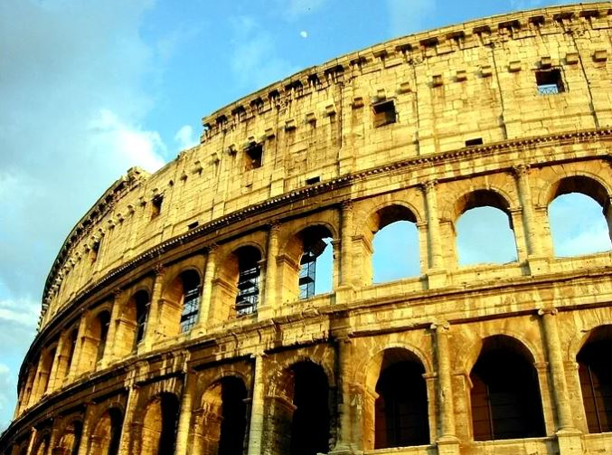

Coliseu
Roma
O Coliseu de Roma ou Anfiteatro Flaviano é um grandioso monumento histórico e arquitetônico de formato cilíndrico que está localizado
na capital da Itália: Roma.
Construído na Antiguidade, o Coliseu de Roma atualmente é um dos pontos turísticos mais visitados da cidade.
Esse patrimônio histórico mundial revela a habilidade e as diversas técnicas utilizadas pelos arquitetos, engenheiros e construtores
da Roma Antiga. É, portanto, um dos maiores exemplos da arquitetura romana.

Museu do Louvre
Paris
Inaugurado a finais do século XVIII, o Museu do Louvre é o museu mais importante da França e um dos mais visitados do mundo. Atualmente
recebe mais de oito milhões de visitantes a cada ano.
A imensa coleção está organizada de forma temática em diferentes áreas: antiguidades orientais, antiguidades egípcias, antiguidades gregas,
romanas e etruscas, história do Louvre e o Louvre medieval, pintura, escultura, objetos de arte, artes gráficas e arte do Islã.
Entre as pinturas mais importantes do museu vale a pena destacar as seguintes:
Monalisa de Leonardo da Vinci.
A Liberdade Guiando o Povo de Delacroix.
As Bodas de Caná de Veronese.

Torre de Belem
Lisboa
A Torre de Belém ou Torre de São Vicente foi construída no século XVI às margens do famoso Rio Tejo. Ali ela funcionava como fortaleza,
contando com vários tipos de artilharia medieval.
A Torre de Belém, em Lisboa, possui uma beleza incrível, tanto em seu interior quanto no exterior. Sua fachada é repleta de símbolos
importantes para Portugal como o rinoceronte que o rei D. Manuel I ganhou do rei de Cambaia, uma cidade indiana. Vários brasões do país se
encontram adornando seu exterior, fazendo a construção ser uma das mais nacionalistas de Portugal.